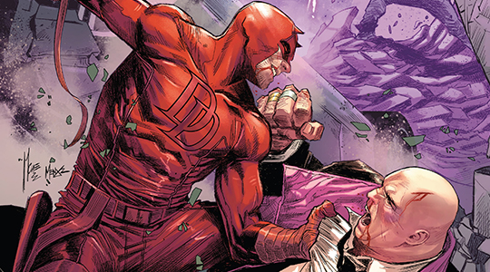

Passado
A vida do Demolidor é uma mistura de alegria e tragédia. A história de Matt Murdock começa com seu pai. Jack Murdock criou seu filho sozinho, querendo que Matt fosse bem mais sucedido profissionalmente. Ele sempre incentivava Matt a estudar ao invés de praticar esportes com outras crianças. As crianças do bairro Hell's Kitchen apelidaram o "covarde" Matt de Demolidor. Matt foi descarregando suas frustrações secretamente na academia de seu pai.
Um dia, um idoso cego atravessava a rua, e se não fosse por Matt, teria sido atropelado por um caminhão. O caminhão bate e um tubo radioativo acaba se quebrando e cai no rosto de Matt, cegando-o por toda a sua vida. Enquanto se recuperava no hospital, Matt descobriu que seus quatro sentidos foram ampliados a níveis sobre-humanos. Ele também desenvolveu uma espécie de radar sensorial, que é similar a ecolocalização.
Anos depois, Matt foi treinado por Stick, um mestre em artes marciais e artes ninja, cego, que lhe ensinou a controlar suas habilidades. Foi o mesmo mestre que treinou Elektra.
Matt continuou a estudar e entrou na Universidade de Direito de Columbia. Lá ele conheceu, Elektra Natchios, de longe, o maior amor da vida do herói. Quando o pai dela é assassinado acidentalmente por um policial, Elektra se isola do mundo e de Matt.
Enquanto isso, Jack continuava sua carreira como boxeador. Ele relutantemente aceitou a participar de uma luta feita por conhecido apenas como "O Arranjador". Para ganhar uma grande quantia em dinheiro, Jack teria que perder a luta. No entanto ele se recusa a perder e vence a luta. Mais tarde naquela noite, Jack é morto pelo Arranjador e seus homens.
O agora órfão Matt, consegue um diploma e abre um escritório de advocacia ao lado de seu amigo e colega de faculdade Franklin Foggy Nelson. Karen Page é contratada como secretária e logo de cara se sente atraída por Matt.
Nisso tudo, Matt começa sua busca por vingança. Fazendo para si um uniforme amarelo e preto avermelhado, ele passa a perseguir o Arranjador e seus capangas. Ao ficar frente a frente com Matt, assassino de seu pai morre de um ataque cardíaco. Apesar da morte de seu pai ter sido vingada, Matt passa a lutar contra o crime como o Demolidor.
Carreira Heroica
No início de carreira, os inimigos do Demolidor eram risíveis, mas com o tempo foram surgindo inimigos à sua altura, entre eles o Mercenário e o Rei do Crime.
Ele, assim como seu colega Peter Parker, também teve muitas namoradas, entre elas Heather Glenn, Viúva Negra e as já citadas Karen Page e Elektra.
Karen tinha iniciado uma carreira como atriz em Los Angeles, mas terminou como estrela de filmes pornô viciada em heroína. Ela acaba vendendo a identidade secreta do Demolidor, que chega aos ouvidos do Rei do Crime. A partir daí, ele começa a arruinar a vida de Matt, financeira e psicologicamente. Depois que a situação se resolveu, Matt e Karen passam a viver juntos. Mas esses acontecimentos não seriam os únicos a assombrar a vida de Matt.
Quentin Beck, mais conhecido como o Mistério, sempre tentou destruir o Homem-Aranha. Ao ser diagnosticado com câncer, volta sua atenção para o Demolidor, tentando destruí-lo como último ato. Quando Matt o vence, Quentin termina sua carreira dando um tiro na cabeça.
Outros momentos difíceis pelos quais Matt passaria seria pela revelação da identidade do Demolidor. Quando a situação se resolveu, foi com o estado mental crítico de Milla Donovan, uma paixão do passado.
Durante os eventos de Reinado Sombrio, Matt entra em confronto com o Mercenário, confronto este que termina com a explosão de um prédio onde moravam várias famílias.
Ao pedir a ajuda do Tentáculo para livrar Nova York do poder de Norman Osborn, Matt tem sua alma corrompida, o que leva à saga Terra das Sombras.